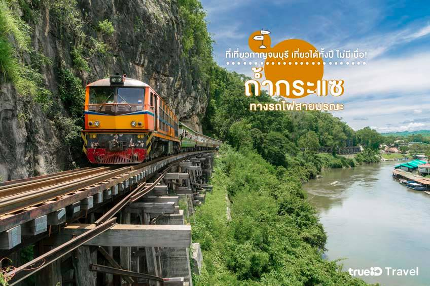
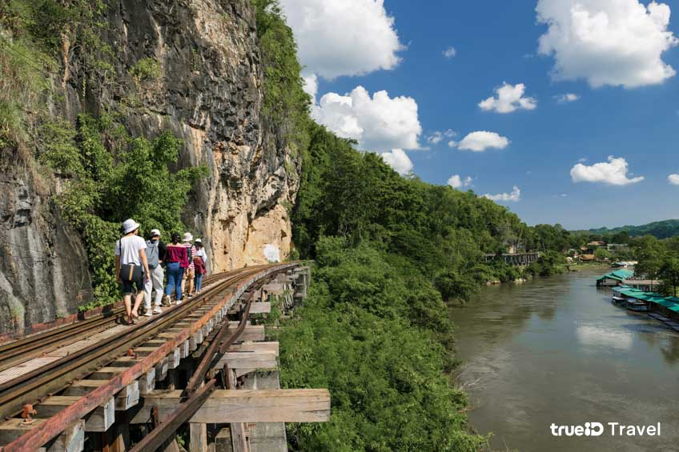
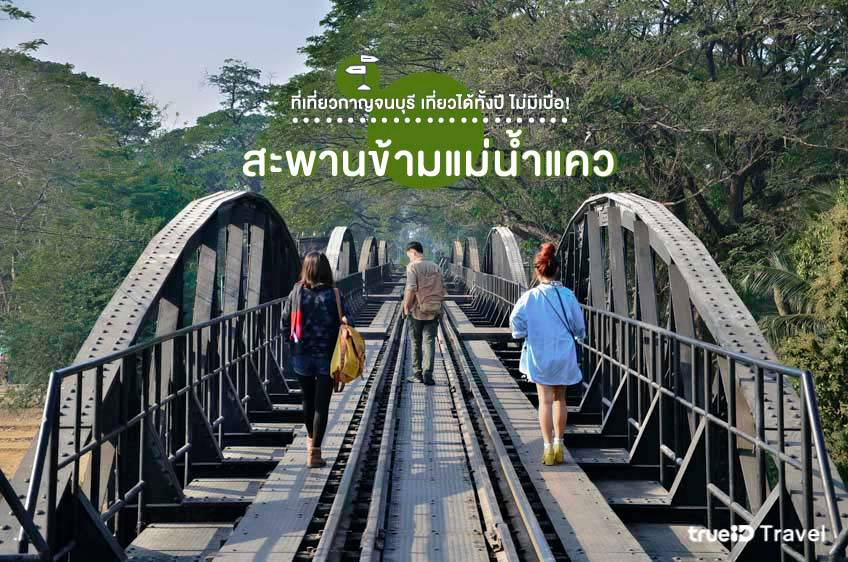
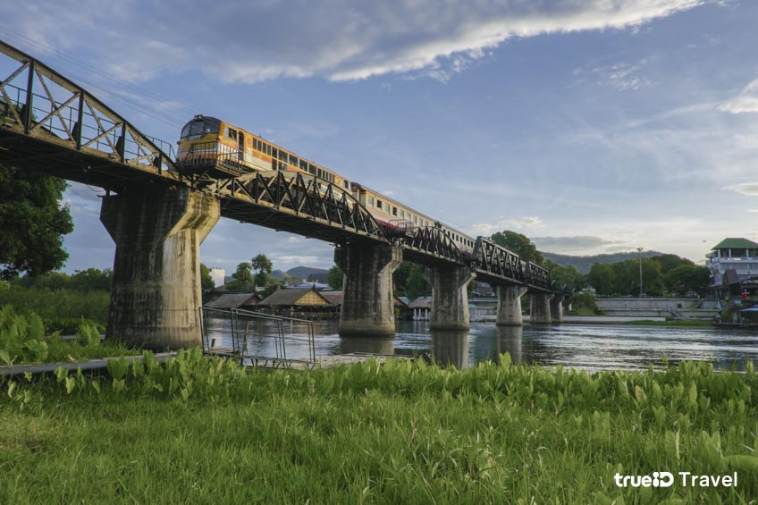
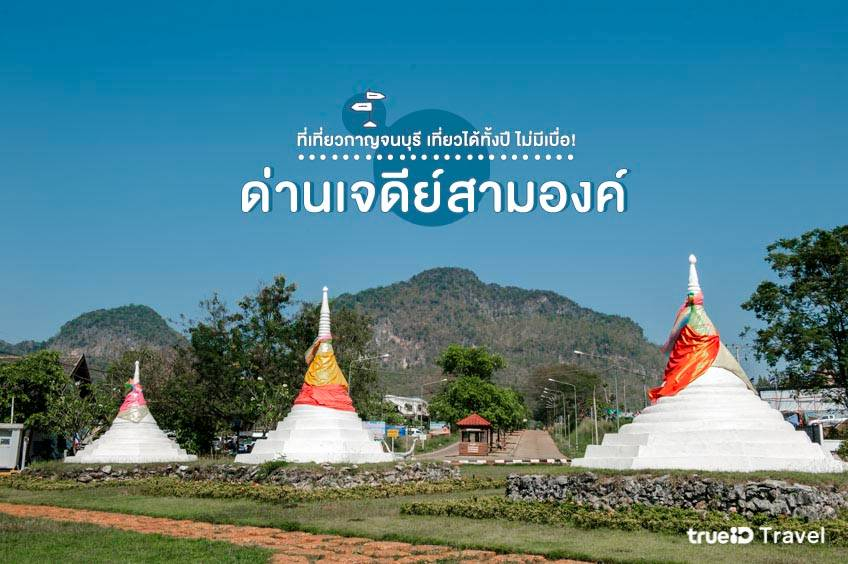
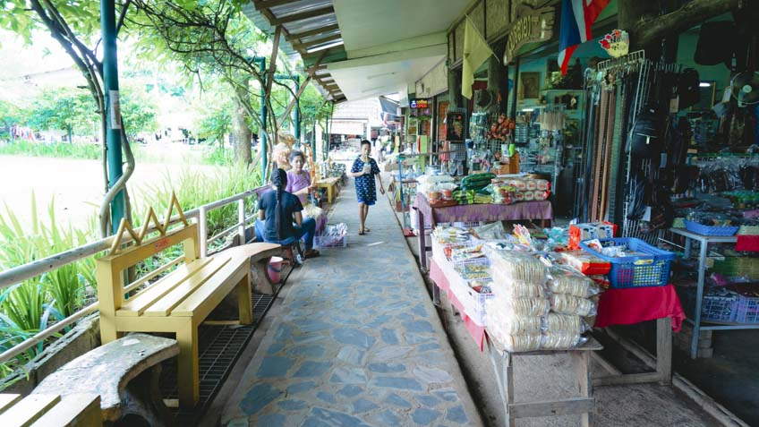
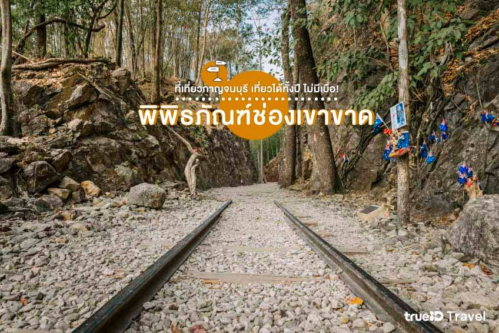
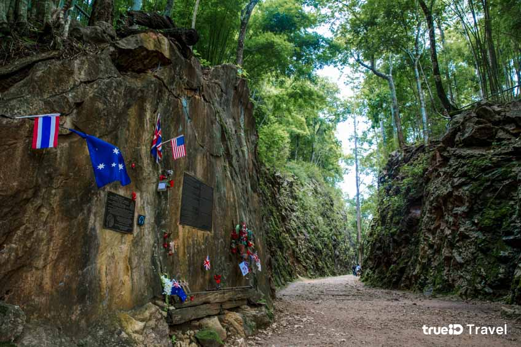

สถานที่ท่องเที่ยวในกาญจนบุรี
1. ถ้ำกระแซ ทางรถไฟสายมรณะ

ถ้ำกระแซ ที่นี่เป็นจุดชมแม่น้ำแควที่เรียกว่าวิวดีที่สุดในเมืองกาญจนบุรีที่เราเรียกกันว่า ทางรถไฟสายมรณะ ค่ะ
ถือว่าเป็นจุดที่สวยที่สุด และอันตรายที่สุดของเส้นทางรถไฟ ด้วยความสูงมากๆ
และติดเลียบหน้าผาทำให้เสียวสันหลังเล็กๆ มองลงไปด้านล่างทำเอาเข่าเกือบทรุดเลยทีเดียวค่ะ

นักท่องเที่ยวสามารถเดินไปถ่ายรูปเล่นได้บนรางรถไฟแต่ก็ต้องคอยระวังในการเดิน และระวังรถไฟด้วยค่ะ
เพราะที่แห่งนี้ยังเปิดให้รถไฟวิ่งได้ตามปกติ ถัดมาจะเป็นถ้ำ
ซึ่งเคยเป็นที่พักของเชลยศึกเมื่อครั้งสร้างเส้นทางรถไฟสายมรณะจากไทยไปพม่า
และภายในถ้ำยังมีพระพุทธรูปศักดิ์สิทธิ์ประดิษฐานอยู่ด้วย
ที่อยู่ : ตำบลลุ่มสุ่ม อำเภอไทรโยค จังหวัดกาญจนบุรี
พิกัด : https://maps.app.goo.gl/mAwkZHyuyD5DpUMW9
เปิดให้เข้าชม : 07.00-18.00 น.
2. สะพานข้ามแม่น้ำแคว

สะพานข้ามแม่น้ำแคว แลนด์มาร์คแรกๆ ที่ทำให้เราคิดถึงเมืองกาญจน์
ตรงที่แห่งนี้เป็นจุดเชื่อมโยงของประวัติศาสตร์โลกในหน้าสงครามโลกครั้งที่ 2
และเป็นอนุสรณ์สงครามมหาเอเชียบูรพา ค่ะ
ไฮไลท์ในการมาเที่ยวที่นี่ก็คือ การได้มาเดินบนรางรถไฟบนสะพานข้ามแม่น้ำแควซึ่งมีระยะทาง 300 เมตร
ทางการรถไฟแห่งประเทศไทยอนุญาตให้นักท่องเที่ยวสามารถเดินบนรางรถไฟ ชมความงามของสองฝากฝั่งแม่น้ำแควได้
แต่ต้องระวังสัญญาณหากทีรถไฟผ่านมาด้วยค่ะ

ที่อยู่ : ตำบลท่ามะขาม อำเภอเมืองกาญจนบุรี จังหวัดกาญจนบุรี
เปิดให้เข้าชม : 06.00-18.00 น.
3. ด่านเจดีย์สามองค์

ด่านเจดีย์สามองค์ เป็นเขตสิ้นสุดชายแดนตะวันตกของประเทศไทย กั้นพรมแดนระหว่างไทยและเมียนมาค่ะ
ในยุคสมัยกรุงศรีอยุธยานั้นที่แห่งนี้เคยเป็นช่องทางเดินทัพที่สำคัญในการทำสงครามไทย–พม่า
ในประวัติศาสตร์อีกด้วย

บริเวณด่านเจดีย์สามองค์นั้นจะมีจุดในเลือกซื้อสินค้าราคาถูกเป็นของฝากของที่ระลึก
รวมถึงเป็นจุดที่เราสามารถยื่นเรื่องของผ่านแดนข้ามไปเที่ยววัดสวยๆ ฝั่งเมียนมาได้อีกหลายแห่งเลยค่ะ เช่น
วัดเสาร้อยต้น วัดเจดีย์ทอง รวมไปถึง ตลาดพญาตองซู ได้ค่ะ แต่ต้องกลับมาฝั่งไทยเราไม่เกิน 18.00 น.
ที่อยู่ : ตำบลหนองลู อำเภอสังขละบุรี จังหวัดกาญจนบุรี
เปิดให้เข้าชม : 06.00-18.00 น.
4. อนุสรณ์สถาน พิพิธภัณฑ์ ช่องเขาขาด

อนุสรณ์สถาน ช่องเขาขาด นั้นสร้างขึ้นเพื่ออุทิศให้กับเชลยศึกในช่วงสงครามโลกครั้งที่ 2 ภายในอนุสรณ์สถาน
เป็นพิพิธภัณฑ์ ซึ่งจะมีภาพบอกเล่าเรื่องราวความทุกข์ยากของเชลยสงครามในช่วงเวลานั้นๆ
มีอุปกรณ์เครื่องไม้เครื่องมือเก่าในการสร้างทางรถไฟ

นอกจากนี้ยังมีเหตุการณ์สำคัญต่างๆ จัดแสดงอยู่ด้วย รวมถึงโครงสร้างทางวิศวกรรมในการสร้างทางรถไฟของญี่ปุ่นอีกด้วยค่ะ
ที่อยู่ : กองส่งเสริมการเกษตรและสหกรณ์ หน่วยบัญชาการทหารพัฒนา อำเภอไทรโยค จังหวัดกาญจนบุรี
เปิดให้เข้าชม : 09.00-16.00 น.